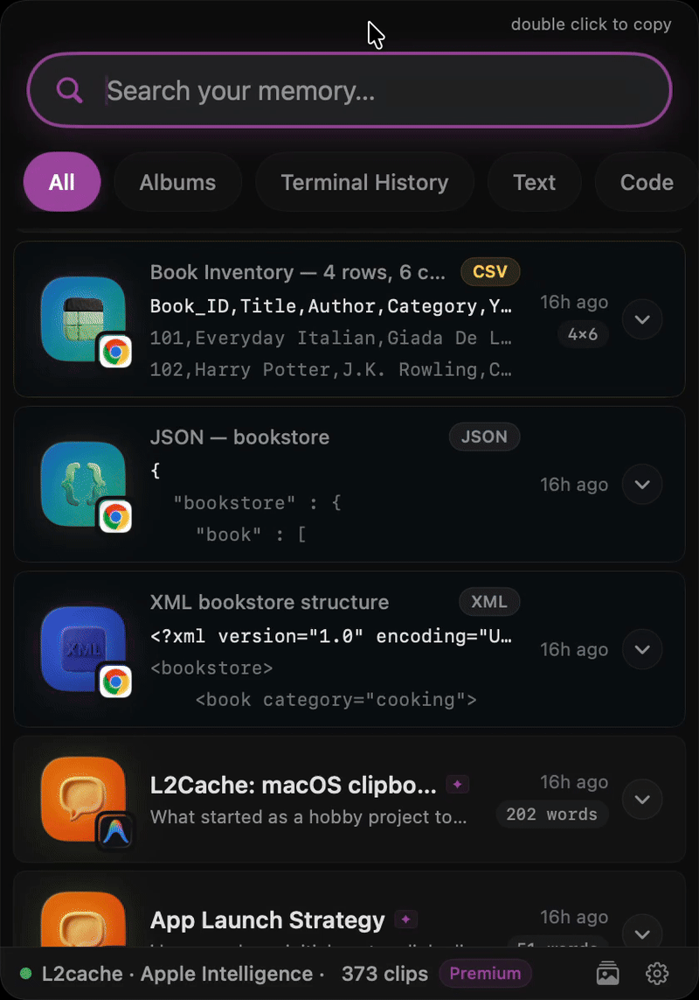

Every web developer has done it. You are debugging a tricky authentication issue, you pull a JWT (JSON Web Token) out of your browser's local storage, and you paste it straight into jwt.io or some random "Free Online JSON Formatter" site.
We all know we shouldn't do it. That token often contains sensitive user roles, PII (Personally Identifiable Information), or access privileges. Yet, we do it anyway because it's faster than writing a quick decoding script in the terminal.
But pasting sensitive production data into random web tools is a massive security risk. You have no idea if that site is logging your tokens, saving your JSON payloads, or scraping your data.
And recently, this exact habit blew up in our faces.
In late 2025, security researchers at watchTowr investigated popular code-formatting sites like JSONformatter.org and CodeBeautify.org. What they found was terrifying: they were able to scrape over 80,000 "saved" developer snippets that were left publicly searchable on these sites.
The leaked data included:
When you paste a JWT into a random third-party website, you are handing a bearer token to a server you do not control. Even if the site claims to be "client-side only," there is no guarantee the data isn't being indexed for a "Share this snippet" feature.
If pasting into random websites is off the table, what are your options?
All of these solutions are 100% secure. But let's be honest: context-switching to a terminal, writing a command, and pasting the token every single time you need to check an expiration date is tedious.
We need tools that are fast enough to beat the convenience of a web app, but secure enough to handle production data without the friction of CLI scripts.
That’s why I built L2Cache, a native macOS clipboard manager designed specifically for developers. Instead of sending your clipboard data to the web, L2Cache brings the web tools to your clipboard—completely offline.
When you copy a JWT, L2Cache automatically recognizes the pattern. You just click the Decode JWT button right in your clipboard history panel. The header and payload are instantly decoded and formatted as beautiful, readable JSON directly on your device.
The data never leaves your Mac.
The same goes for massive, minified JSON payloads returned from a curl command. Instead of tabbing out to jsonformatter.org (and risking adding to the 80,000 leaked credentials), you can use L2Cache's "Smart Actions" to format and syntax-highlight the JSON payload locally.
It's a subtle shift, but by moving these common formatting tasks out of the browser and into a secure, native macOS layer, you eliminate context switching and close a major security loophole in your daily workflow.
Protect your tokens. Keep your data local.
A completely native clipboard manager built specifically for developers.
Download Free Early Access